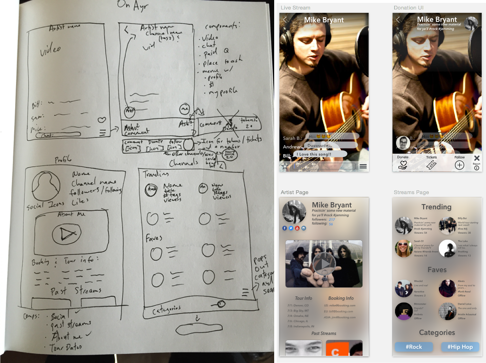

Portfolio
Skills
Contact
Other Projects
Things I've made for fun and learning
An fun app design for Green Chef
Learning FramerJS
A sketch and wireframes for lfo.audio's iOS app we were calling OnAyr

VIEW ANOTHER PROJECT